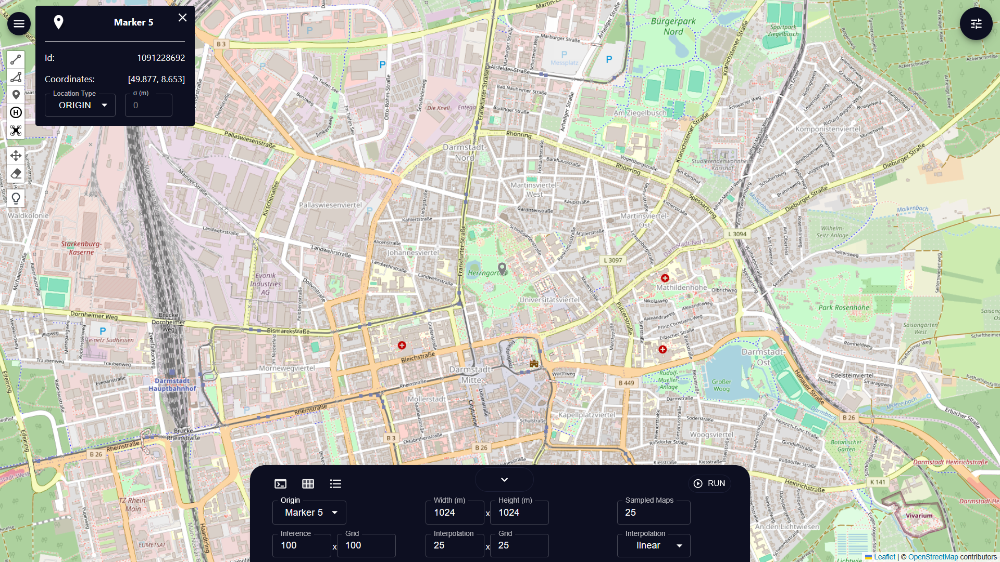

GUI Quick start
This document will walks you through some of the GUI key features.
Setup Geographical Entities
To work with ProMis framework, we need to setup the geographical environment, in which it will use to do calculation and make inference on. There are 3 ways to set this up, which all have it’s advantages and disadvantages.
Manual Entities Creation
Entities can be created manually through the left side interface of the gui. Users can create Marker, Polyline and Polygon on the map. Interacting with these object with double-click to reveal a information panel, which can be use to change its location type as well as uncertainty’s standard deviation.

Loading From OSM
Manually creating entities can be tedious and time-consuming so entities can also be loaded by providing the gui with a osm tag filters (see overpass query language docs)

Backend API
Additionally the backend also provide an HTTP endpoint to add/update geographical entities. It is available as POST endpoint under localhost:8000/add_geojson
and require a geojson feature with either point, linestring or polygon geometry as the http request body.
Here is a simple example of using the api.
# entity.geojson
{
"type": "Feature",
"geometry": {
"type": "Point",
"coordinates": [8.65, 49.87]
},
"properties": {
"location_type": "civilian"
},
"id": "0"
}
1curl -X POST http://localhost:8000/add_geojson \
2 -H "Content-Type: application/json" \
3 -d @entity.geojson
Alternatively, ProMis also provides functions to push its entity or map to the gui.
1# push a marker to gui
2location = PolarLocation(latitude=49.87, longitude=8.65, location_type="civilian" , identifier=0)
3location.send_to_gui()
4
5# push the entire map to gui
6feature_description = {
7 "park": "['leisure' = 'park']",
8 "primary": "['highway' = 'primary']",
9}
10origin = PolarLocation(latitude=49.87, longitude=8.65)
11width, height = 1000.0, 1000.0
12uam = OsmLoader(origin, (width, height), feature_description, timeout=5.0).to_polar_map()
13uam.send_to_gui()
Setup Computation Boundary and Settings
Computation boundary for the model can be set in the bottom bar by choosing a reference center marker (of type ORIGIN) and set the width and height of the boundary.
Setup Rules and Models
Rules and models for the computation can be edited in the code editor in the bottom bar. Make sure to have a landscape rules to yield meaningful result